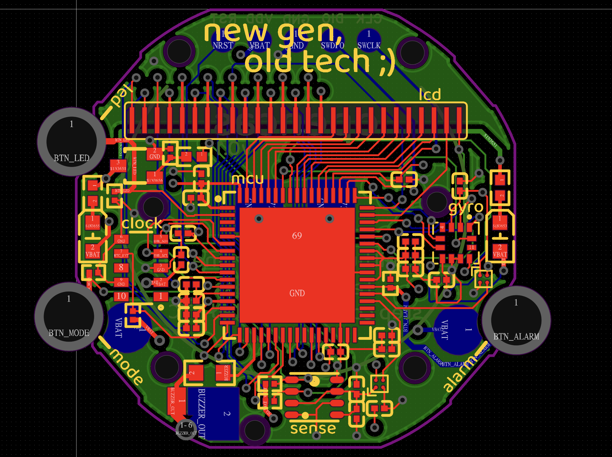

ALESSANDRO NARDINELLI'S WEBSITE
This is how your content will look. Clean, readable, simple — like fabiensanglard.net.
ALESSANDRO NARDINELLI'S WEBSITE
Nov 17, 2025

quake.exe
// Example code block
int main() {
return 0;
}
Why did ID choose DJGPP for Quake?
The client application was written with the assumption that it is using the MS-DOS extender that is included with the application, but in reality it is talking to the DPMI host that comes with Windows.
The fact that programs seem to run mostly okay in spite of running under a foreign extender is either completely astonishing or totally obvious, depending on your point of view.
It’s completely astonishing because, well, you’re taking a program written to be run in one environment, and running it in a different environment. Or it’s totally obvious because they are using the same DPMI interface, and as long as the interface has the same behavior, then naturally the program will continue to work, because that’s why we have interfaces!
- Raymond Chen [2]
 I had to stick with the STMFXX family because I did not want to adapt Betaflight's code and capabilities (too much of a challenge). Since now there is also support for some STMHXX chips, those come out too costly and in my opinion are not worth it, since most pilots do not require tons of UARTs and core CPU use rarely passes the 50% mark on an F722.
I had to stick with the STMFXX family because I did not want to adapt Betaflight's code and capabilities (too much of a challenge). Since now there is also support for some STMHXX chips, those come out too costly and in my opinion are not worth it, since most pilots do not require tons of UARTs and core CPU use rarely passes the 50% mark on an F722.
| Video Mode | BG 0 | BG 1 | BG 2 | BG 3 |
|---|---|---|---|---|
| 0 | 2bpp | 2bpp | 2bpp | 2bpp |
| 1 | 4bpp | 4bpp | 2bpp | |
| 2 | 4bpp | 4bpp | ||
| 3 | 8bpp | 4bpp | ||
| 4 | 8bpp | 2bpp | ||
| 5 | 4bpp | 2bpp | ||
| 6 | 4bpp | |||
| 7 | 8bpp | EXTBG |